Before you begin installing IntelliJ, you first need the Java Development Kit (JDK). Click this button to download it:
Download JDK
On the download page you will see a box that looks like this. Just click to accept the agreement, then download the latest Windows JDK x86 file.
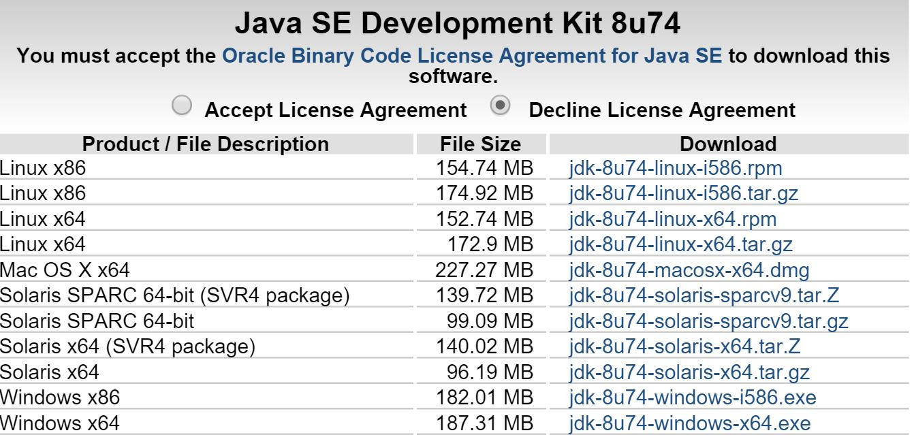
Once the file has downloaded (this may take a while!), open it up and click the buttons in the order shown:
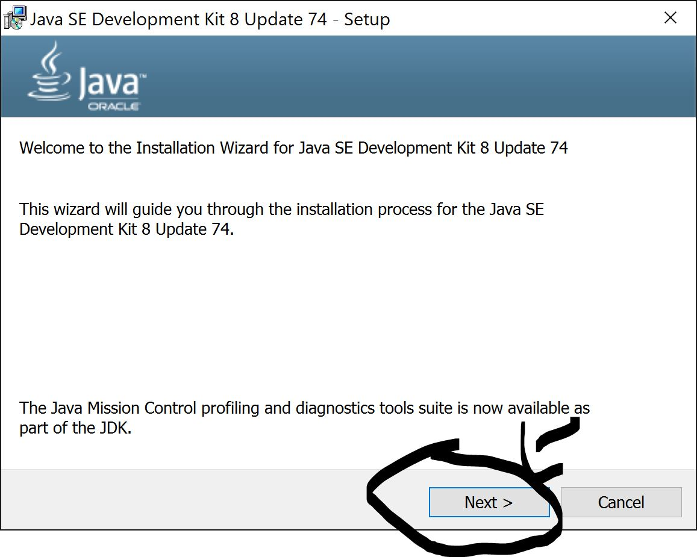
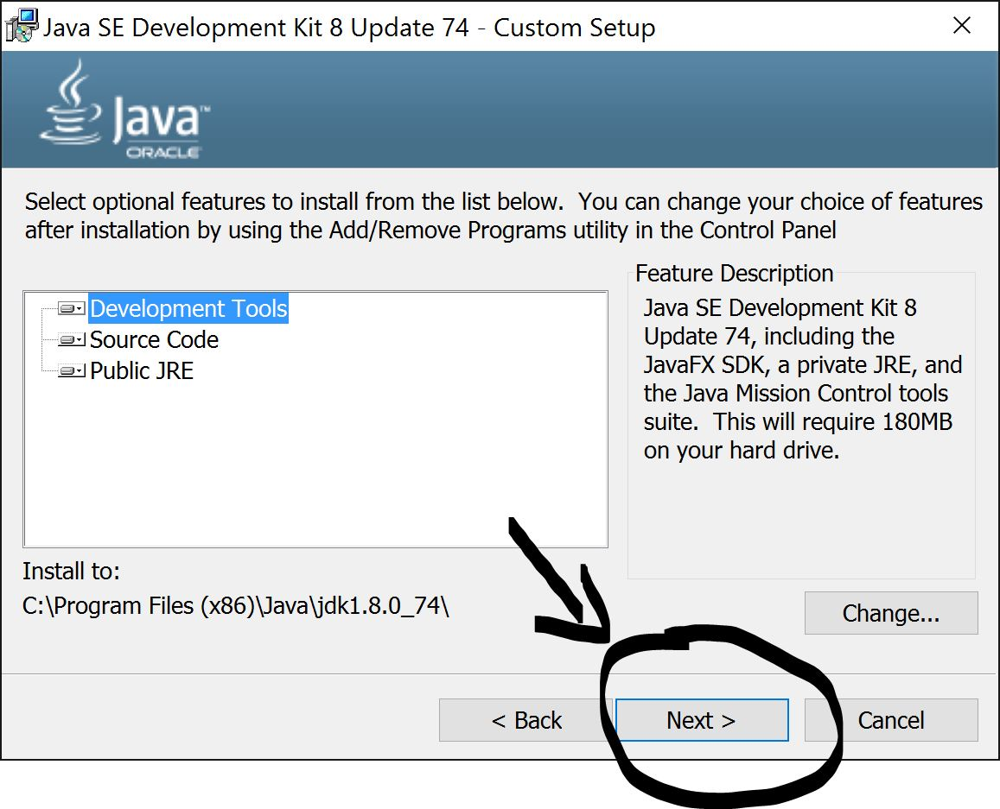
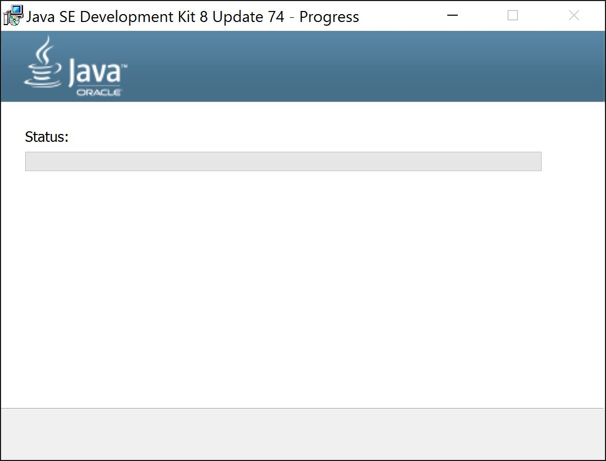
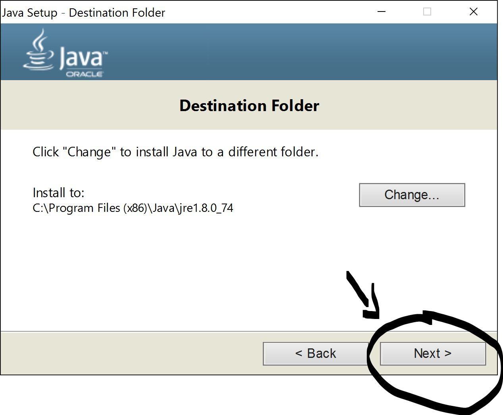
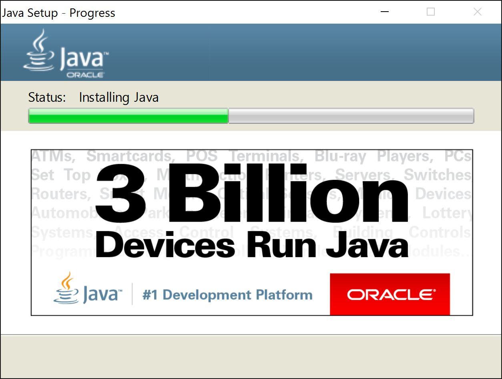

Once complete, you can install IntelliJ IDEA. This will help you write code more quickly, and help you out along the way.
First, click the button below to head to the download page. Then follow the pictures to install the software.
Jetbrains IntelliJ Website
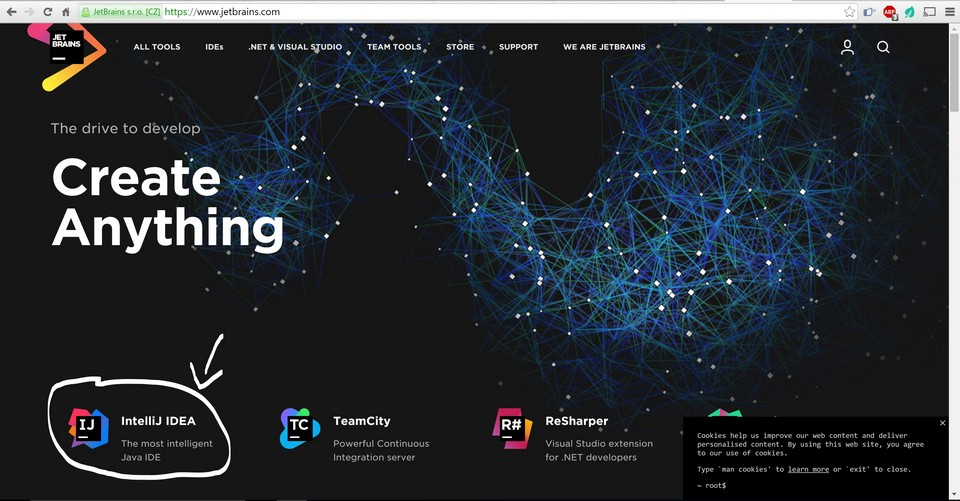
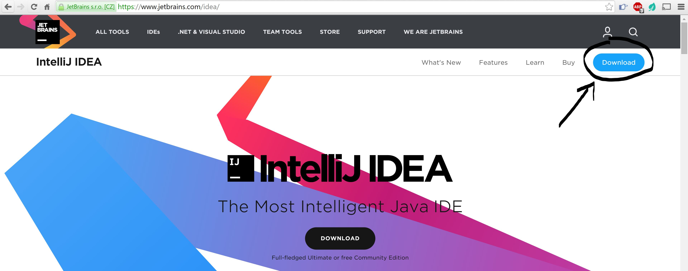
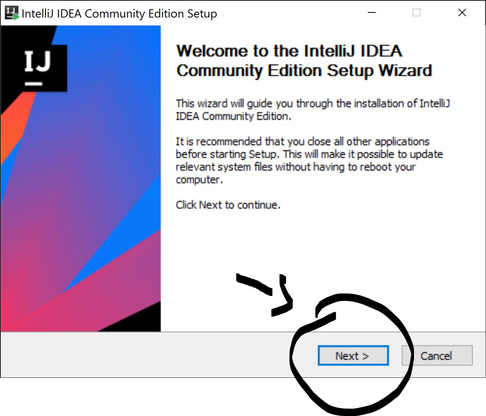
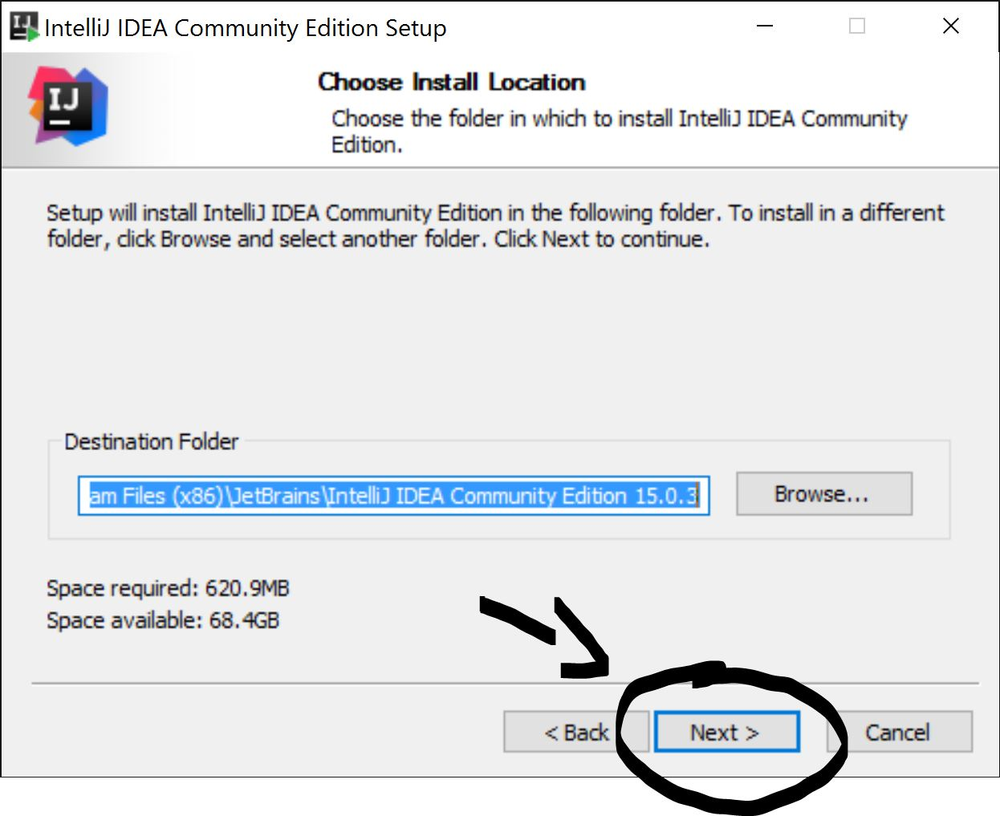
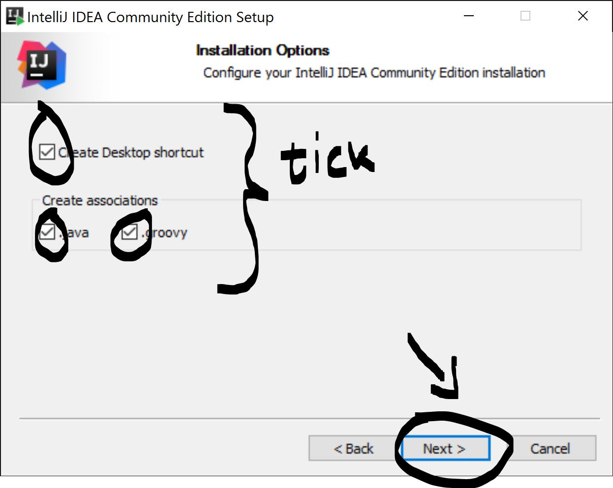
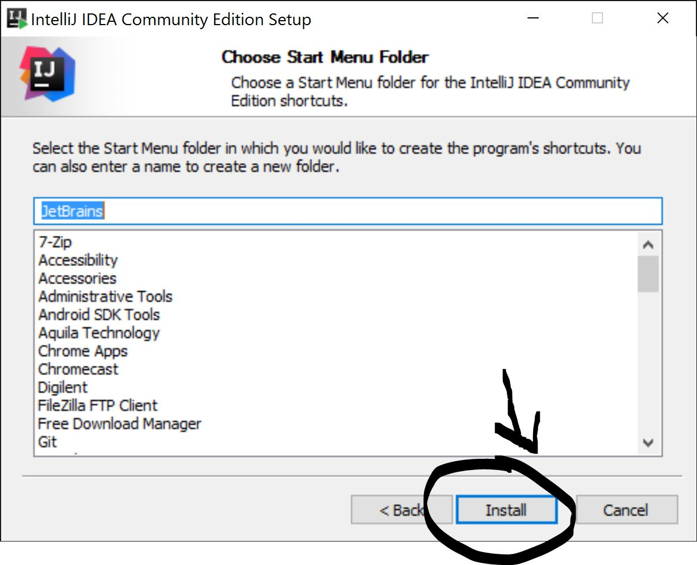
In order to code in Java, first of all you need a software development kit named JDK ()
First thing to do in order to install intelliJ on your Mac, is to jump to the JetBrain Website and download IntelliJ!
Simply click here to Automatically download it :P.